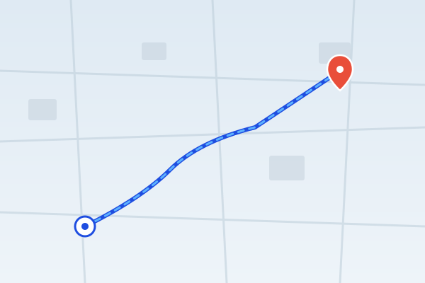

📍 You
🏠 Amit's home
Bandra West
Flat 804, Sea View Residency, Turner Rd,
Bandra West, Mumbai — 400050
5.2km
22min ETA
10:12Arrival
HomeVisit type
Before you enter OTP
Step 1 of 31
Navigate to patient location
Use the map link above to get turn-by-turn directions. Allow location access if prompted.
2
Call patient if delayed
Confirm building entry and update the patient if you're running late.
Visit instructions
Security gate requires appointment ID PB-2406. Amit prefers WhatsApp if you are delayed. Please carry resistance band and lumbar support assessment sheet. Lift access available on the left side of the lobby.